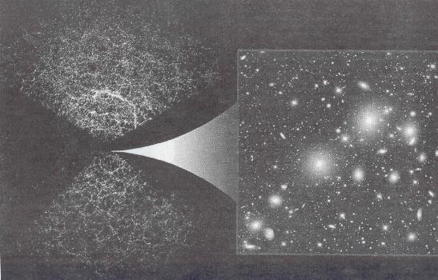

Los cosmólogos ajustan la receta del universo
La materia corriente es solamente el 5% del cosmos, que está dominado por la energía oscura
ALICIA RIVERA, Madrid.- Si
ya era bastante misteriosa la materia oscura del universo, que ni brilla ni
se detecta como la matería corriente que forma las estrellas y los planetas,
más desconcertante aún es para los científicos algo que
se ha llamado la energía oscura, un efecto para que el que "hay
al menos 10 nombres diferentes", como dice el astrofisico Saul Perinuter
del Laboratorio Lawrence Berkeley (EE UU). Sin embargo esa energía oscura,
o lo que sea, se ha convertido recientemente en protagonista principal de las
recetas del universo que deducen los cosmólogos a golpe de dificiles
observaciones del cielo y no menos atrevidas teorías. "La composición
del universo es: energía oscura, un 70%; materia oscura, un 25%; materia
ordinaria invisible, un 4% [se detecta por su efecto gravitatorio]; estrellas
y materia visible 0,5% y neutrinos otro 0,5%", explica Wendy Freedinan
(Carnegie Institution). Y coincidieron en estas proporciones los participantes
en el simposio La nueva cosmología, de la reunión de este
año de la Asociación Americana para el Avance de la Ciencia (AAAS)
celebrada en Seattle. "Así que la mayor parte del balance masa-energía
del universo es energía oscura, para lo que no tenemos explicación",
puntualizó Freedman.
Sin embargo, esta humilde declaración de desconocimiento de los cosmólogos viene de la mano de espectaculares avances en los últimos años en el estudio del universo, con diferentes estrategias de observación que llegan a conclusiones similares, o al menos compatibles. desde la detección de galaxias lejanísimas, prácticamente en el límite del universo visible, hasta nuevos mapas que muestran las estructuras cosmológicas, o la detección con alta resolución de la radiación de fondo de microondas remanente de la explosión inicial.
La idea de energía oscura no es una novedad, sino una propuesta de Einstein --que él mismo rechazó-- rescatada ahora para intentar explicar unas observaciones sorprendentes de los últimos años. La cuestión es que puede haber una especie de fuerza gravitatoria repulsiva en lugar de atractiva, una presión negativa, actuando en el universo. Así tendrían sentido los estudios que indican que el cosmos se está acelerando, cuando se pensaba lo contrario, que debía estarse ralentizando, es decir que la expansión iniciada con el Big Bang debería ser cada vez más lenta debido al freno impuesto por la atracción gravitatoría de la materia existente.
Hace cinco años, dos grupos internacionales, uno dirigido por Perlmutter (Supernova Cosmology Project, en el que participan astrónomos de la Universidad de Barcelona) y el otro por el austrahano Brian Schmmidt (High-Z Supernova), vieron que unas supernovas de un tipo específico (utilizadas como mojones en el cosmos para medir distancias a galaxias lejanas) brillan algo menos de lo que deberían teniendo en cuenta su distancia. Fue toda una sorpresa y los científicos se empeñaron a fondo para descartar efectos que pudiesen enmascarar las observaciones, como polvo intergaláctico que oscureciera un poco esas supernovas.
Ahora, con decenas de supernovas tipo Ia estudiadas por ambos grupos, el efecto es más evidente y la aceleración ha ganado credibilidad sobre el inicial escepticismo que había al respecto en la comunidad científica, aunque no convence a todos. "El efecto de la aceleración es pequeñísimo y muy dificil de medir", advirtió Perlmutter, añadiendo que el Supernova/Acceleration Probe, un satélite que está aún en fase de proyecto, intentará explicar el mecanismo de esta aceleración observada midiendo unas 6.000 supernovas lejanas en tres años.
De momento, ese algo llamado energía oscura, esa repulsión gravítatoria, no sólo justificaría la aceleración observada, sino que cuadra razonablemente bien con otros parámetros cosmológicos, como la geometría plana del universo. Pero "hasta que no se comprenda completamente la energía oscura, la cuestión del destino de nuestro universo sigue en el aire", afirma Freedman. Es decir, que los cosmólogos no saben si seguirá expandiéndose eternamente o no.
Lo que parece claro es que se han zanjado los encendidos debates, de la década de los noventa sobre la edad del universo entre quienes deducían de sus mediciones un cosmos muy joven y quienes se inclinaban por una edad más madura. La datación aceptada es 13.700 rnillones de años, con un error de más/menos 200 millones de años. Y el valor de la constante de HubbIe, que relaciona la velocidad de recesión de las galaxias distantes con la distancia y representa la tasa de expansión del universo, se ha establecido en 72 kilómetros/segundo/megaparsec, con una incertidumbre del 10%.
Otro tema de moda en cosmología en los últimos años es la radiación de fondo, sobre todo a partir de los resultados del satélite Cobe, en 1992, que indicaron que esa radiación remanente del universo casi recién nacido no es tan uniforme como parecía, y que se detectan en ella diferencias de temperatura que originarían las estructuras a gran escala, (las galaxias y los cúmulos de galaxias) que se ven en el universo maduro.
Lyman Page (Universidad de Princeton) comentó los avances del nuevo satélite Wmap, 100 veces más sensible que el Cobe, que está dando resultados espectaculares y consistentes con otras observaciones sobre la geometría del universo y su edad. Además ha aportado datos que apoyan la teoría de la inflación cósmica, según la cual casi al principio del universo este creció exponencialmente y la parte visible es un pedazo tan pequeño del universo inflacionario que parece plano, como parece plana la Tierra para alguien que sólo vea unos cientos de metros a su alrededor.
Un mapa con 100 millones de galaxias
El más ambicioso programa de cartografla del cielo emprendido hasta ahora, el Sloan Digital Sky Survey (SDSS), ha ubicado ya 221.283 galaxias --a finales de 2003--, según informó Joshua Frieman, uno de los miembros del consejo del programa. En el mapa resultante se aprecia la distribución de las galaxias en filamentos, enredados como formando una gigantesca tela de arafia con colosales vacíos entre medias.
El objetivo del SDSS es cartografiar hasta 100 millones de galaxías cubriendo aproximadamente una cuarta parte de la bóveda celeste en dos dimensiones (indicando la posición, el color y el brillo de cada galaxia), así como hacer un mapa tridimensional (indicando también la distancia) de un millón de galaxias. "El proyecto arrancó en abril de 2000 y tiene financiación hasta junio de 2005, pero queremos continuar al menos tres aflos más" comentó este astrofísico de Fermilab (EE UU).
Conocer la distribución de las galaxias en el cielo, explicó Frieman en la reunión sobre La nueva cosmología, apunta a tres problemas clave que se plantean los científicos: cómo se forman las estructuras a gran escala en el universo, de qué está hecho éste y qué sucedió en los primeros instantes, es decir, contrastar la teoría de la inflación cósmica que debió producirse en los nrimeros instantes después del Big Bang.
En el SDSS están trabajando 200 astrónomos de 13 instituciones de EE UU, Europa y Japón. Un telescopio de 2,5 metros de diámetro en el Observatorio Apache Point (Nuevo México) se dedica exclusivamente a este programa. Los astrónomos utilizan una cámara especialmen disefiada de gran angular y un espectrógrafo capaz de medir los espectros de luz de 608 objetos celestes simultáneamente.
De cara al futuro, los científicos quieren hacer mapas del cielo aún más ambiciosos con telescopios en tierra y en el espacio, dijo Frieman,
También se están elaborando mapas celestes basados en el fenómeno de lente gravitacional (la curvatura y distorsión de rayos de luz por objetos masivos en el universo), explicó Richard S. Ellis, de Caltech. "Hernos construido mapas de la distribución de materia oscura utilizando tanto distorsiones débiles como fuertes de galaxias tenues vistas a través de estructuras que están delante de ellas". exnlicó

Mapas celestes del SDSS en dos modalidades: bidimensional (izquierda)añadiendo la distancia de las galaxias.
EL PAÍS, 28 de abril de 2004